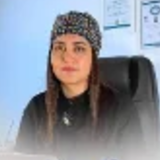
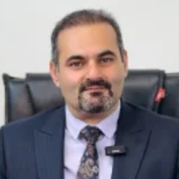

پزشکان کلینیک نیکان را ببینید و از صفحه هر پزشک نوبت بگیرید.

دکتر سارا محمدی
متخصص قلب و عروقفلوشیپ اکوکاردیوگرافی · ۱۵ سال سابقه۹۶٪ توصیه شده ۴٫۸ (از ۱۲۴ نظر)
ویزیت حضورینوبت تلفنیمشاوره آنلاین
اولین نوبت خالیامروز، ۱۶:۳۰
دکتر امیر رضایی
متخصص پوست، مو و زیباییبورد تخصصی پوست · ۱۰ سال سابقه۹۳٪ توصیه شده ۴٫۷ (از ۸۸ نظر)
ویزیت حضورینوبت تلفنیمشاوره آنلاین
اولین نوبت خالیسهشنبه ۵ آبان
دکتر نرگس کریمی
متخصص زنان، زایمان و نازاییفلوشیپ نازایی · ۱۸ سال سابقه۹۵٪ توصیه شده ۴٫۹ (از ۲۱۰ نظر)
ویزیت حضوری
اولین نوبت خالیچهارشنبه ۶ آبان
دکتر حمید احمدی
متخصص ارتوپدیفلوشیپ زانو و آرتروسکوپی · ۱۲ سال سابقه۹۱٪ توصیه شده ۴٫۶ (از ۷۶ نظر)
ویزیت حضورینوبت تلفنی
اولین نوبت خالیامروز، ۱۸:۰۰
دکتر مریم حسینی
پزشک عمومیپزشک خانواده · ۸ سال سابقه۹۴٪ توصیه شده ۴٫۷ (از ۱۵۲ نظر)
ویزیت حضورینوبت تلفنیمشاوره آنلاین
اولین نوبت خالیامروز، ۱۵:۰۰

دکتر پیمان راد
متخصص مغز و اعصاب (نورولوژی)بورد تخصصی نورولوژی · ۲۰ سال سابقه۹۳٪ توصیه شده ۴٫۷ (از ۷۰ نظر)
ویزیت حضورینوبت تلفنیمشاوره آنلاین
اولین نوبت خالیشنبه ۹ آبان